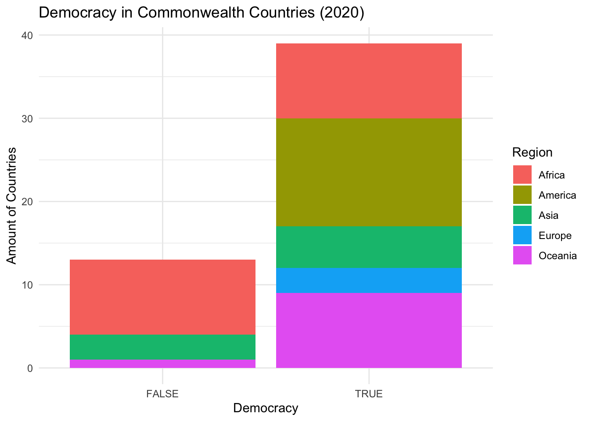

In today’s global political landscape, democratic principles face challenges as authoritarian regimes have risen significantly in the past decade. Understanding democratization and regime change dynamics is crucial for navigating contemporary politics and safeguarding democratic values.
This project focuses on the Commonwealth of Nations, a unique political association of countries with shared historical ties, to investigate how democratic regimes have evolved within this group. By studying regime transitions and levels of democracy across Commonwealth countries, we aim to assess the extent to which recent global shifts toward authoritarianism are reflected within the Commonwealth. Our goal is to understand the magnitude of these changes, explore possible explanations for patterns of democratization and regression, and evaluate how democracy is assessed across different contexts.
Through this analysis, we hope to contribute to broader conversations about the resilience of democratic systems and the vulnerabilities they face in an increasingly complex and contested international environment.
2 Research Question.
What are the patterns of democratic transition among Commonwealth countries, and how do they vary across different regions, such as Africa?
3 Data Collection
The data was obtained from TidyTuesday, a weekly community activity and podcast hosted by the Data Science Learning community. This specific dataset was curated and published on November 5, 2024, focusing on changes in democracy and dictatorship worldwide. The data are part of a meta-analysis publication, “Democracy and Dictatorship Revisited” by José Cheibub, Jennifer Gandhi, and James Vreeland (Cheibub, Gandhi, and Vreeland 2010). This publication was an extension of the paper “Classifying Political Regimes” by Mike Alvarez, José Antonio Cheibub, Fernando Limongi, and Adam Przeworski (Alvarez et al. 1996), which overall analyzed the impact of regime changes.
The democracy data consisted of 14,768 datapoints from the countries and years the data was recorded, encompassing 43 types of measurements. From these, 11 were categorical, including the country name, country code, regime category, monarch’s name, president’s name, etc. Another 15 were numerical variables, including year, regime category index, monarch accession year, etc. Lastly, the other 17 were logical variables (TRUE or FALSE), which included whether it is a commonwealth, whether it is a female monarch, whether it is a democracy, etc. However, due to our focus on Commonwealth countries, some data wrangling was necessary to filter our two-year focus period (1950-2020) with the countries considered to be Commonwealths according to the data. Also, for further analysis, we had to add another column with the regions of each country in the list.
world <-ne_countries(scale ="medium", returnclass ="sf")commonwealth_1950 <- commonwealth |>filter(year ==1950)world <- world |>mutate(is_commonwealth = name %in% commonwealth_1950$country_name)ggplot(data = world) +geom_sf(aes(fill = is_commonwealth), color ="blue") +scale_fill_manual(values =c("TRUE"="red", "FALSE"="grey90")) +theme_minimal() +labs(title ="Commonwealth Countries in 1950", fill ="Commonwealth") +theme(plot.title =element_text(size =20, face ="bold"),legend.title =element_text(size =14),legend.text =element_text(size =12), )
Code
commonwealth_2020 <- commonwealth |>filter(year ==2020)world <- world |>mutate(is_commonwealth = name %in% commonwealth_2020$country_name)ggplot(data = world) +geom_sf(aes(fill = is_commonwealth), color ="blue") +scale_fill_manual(values =c("TRUE"="red", "FALSE"="grey90")) +theme_minimal() +labs(title ="Commonwealth Countries in 2020", fill ="Commonwealth") +theme(plot.title =element_text(size =20, face ="bold"),legend.title =element_text(size =14),legend.text =element_text(size =12), )
Commonwealth Across Time
The number of commonwealth countries have increased between 1950 and 2020, and most of the new members come from African countries and south Asian countries. The interesting point lies in the colonial history of these countries and their relationship with the Commonwealth. Equally worthy of consideration is the relationship between this model of increasing membership in Africa and Asia and neocolonialism.
ggplot(commonwealth_1950, aes(x = is_democracy, fill = region)) +geom_bar() +labs(title ="Democracy in Commonwealth Countries (1950)",x ="Democracy",y ="Amount of Countries",fill ="Region") +theme_minimal()
Code
ggplot(commonwealth_2020, aes(x = is_democracy, fill = region)) +geom_bar() +labs(title ="Democracy in Commonwealth Countries (2020)",x ="Democracy",y ="Amount of Countries",fill ="Region") +theme_minimal()

Democracy Trends Insights
The most important takeaways from the graphed data are that overall, there was a higher trend in democratic commonwealth countries both in 1950 and 2020. However, it is important to note the increase of commonwealth countries in 2020, which makes us understand that there is a higher proportion of non-democratic countries in Africa than there were in 1950, which would be key for our further analysis.
4.3 Change in Regimes
Code
ggplot(commonwealth_1950, aes(y =fct_infreq(regime_category), fill = region)) +geom_bar() +labs(title ="Regime Categories of Commonwealth Countries in 1950",y ="Regime Category",x ="Number of Countries per Regime",fill ="Region") +theme_minimal()
Code
ggplot(commonwealth_2020, aes(y =fct_infreq(regime_category), fill = region)) +geom_bar() +labs(title ="Regime Categories of Commonwealth Countries in 2020",x ="Number of Countries per Regime",y ="Regime Category",fill ="Region") +theme_minimal()
Regime Change Insights
For the next group of graphs, we decided to narrow our focus to the change in type of regime in regions of the world from 1950 to 2020. As we have seen before, there is still a higher proportion of democratic commonwealth countries, however, it is important to highlight how there is a higher amount of African commonwealth countries in 2020 that have a dictatorship regime in contrast with other regions.
4.4 Democrary Visualizations
Code
cw_map <- world |>left_join(commonwealth_2020, by =c("name"="country_name"))ggplot(cw_map) +geom_sf(aes(fill = is_democracy), color ="white") +scale_fill_manual(values =c("TRUE"="darkgreen", "FALSE"="red", "NA"="gray"),labels =c("TRUE"="Democracy", "FALSE"="Not a Democracy", "NA"="No Data")) +labs(title ="Current Democracy Status in Commonwealth Countries",fill ="Democratic State" ) +theme_minimal() +theme(plot.title =element_text(size =20, face ="bold"),legend.title =element_text(size =14),legend.text =element_text(size =12) )
Current Democratic States in the Commonwealth
The plot shows a world map with Commonwealth countries categorized by their current democracy status. Here’s how the countries are represented: - Green countries: These are the Commonwealth countries that are currently considered democracies. - Red countries: These are the Commonwealth countries that are not currently considered democracies.
Code
library(ggpattern)library(ggthemes)africa_map_2020 <- world |>filter(region_un =="Africa") |>left_join(commonwealth_2020, by =c("name"="country_name"))ggplot(africa_map_2020) +geom_sf_pattern(aes(fill = regime_category, pattern = is_democracy),color ="white",pattern_color ="white",pattern_density =0.3,pattern_spacing =0.02,pattern_key_scale_factor =0.6,size =0.2 ) +scale_fill_viridis_d(option ="plasma", na.value ="gray80") +scale_pattern_manual(values =c("TRUE"="stripe", "FALSE"="none")) +labs(title ="Regime Types and Democracy Status in African Commonwealth Countries in 2020",fill ="Regime Type",pattern ="Democracy" ) +theme_map() +theme(plot.title =element_text(size =20, face ="bold"),legend.title =element_text(size =14),legend.text =element_text(size =12) )
Regime Types and Democracy Status in African Commonwealth Countries in 2020
This map highlights that African Commonwealth countries in 2020 are divided between democratic, mixed, and authoritarian systems. Southern Africa seems to be the region with relatively more stable democracies, while the central and northern regions of the continent remain significantly under authoritarian rule, with several nations still struggling with democratic transitions.
5 Conclusion
Overall, while a majority of commonwealth countries have leaned towards democracy by holding competitive elections and adopting different democratic regimes, there has been an uneven transformation in some. Mixed and civil dictatorship regimes still exist, especially in the region of Africa, where the challenges of democratic consolidation remain unfinished. Although the Commonwealth as an organization championed democratic values, it is clear that there is a lack of enforcement of this idea in different countries due to their unique historical, social, and political dynamics.
6 Limitations and Future Work
Our project has two main limitations. First, the selection of countries included in our study is very limited. Due to the nature of the Commonwealth, most member states are concentrated in Africa and Central America, with only a few countries outside the United Kingdom that could be considered traditional Western nations. This selection bias reduces the diversity of our results, as we are unable to examine the democratization processes of countries from regions such as Eastern Europe or broader parts of Asia during the same period. The second major limitation concerns the definition of democratization in our data. While democratization can involve a wide range of factors, including more complex dimensions such as women suffrage, our project adopts a very narrow definition, primarily focusing on whether democratic elections exist. As a result, we may overlook critical stages in certain countries’ democratization processes and risk making conclusions that are too definitive. Potential improvements to our research include expanding the analysis to cover a broader range of countries from different regions and conducting more detailed year-by-year categorizations, even though this would significantly increase the workload. Additionally, rather than using a binary classification of democracy (i.e., democratic or non-democratic), we could implement a scoring system to assess the level of democracy. For example, a country could earn points for features such as holding democratic elections or allowing women to run for office, and the total score would then be used to assess the degree of democratization.
Source Code
---title: "Report"execute: echo: true # change to true to show the codecode-fold: true # change to true to fold the code chunks---# Motivation. In today's global political landscape, democratic principles face challenges as authoritarian regimes have risen significantly in the past decade. Understanding democratization and regime change dynamics is crucial for navigating contemporary politics and safeguarding democratic values.This project focuses on the Commonwealth of Nations, a unique political association of countries with shared historical ties, to investigate how democratic regimes have evolved within this group. By studying regime transitions and levels of democracy across Commonwealth countries, we aim to assess the extent to which recent global shifts toward authoritarianism are reflected within the Commonwealth. Our goal is to understand the magnitude of these changes, explore possible explanations for patterns of democratization and regression, and evaluate how democracy is assessed across different contexts.Through this analysis, we hope to contribute to broader conversations about the resilience of democratic systems and the vulnerabilities they face in an increasingly complex and contested international environment.# Research Question.What are the patterns of democratic transition among Commonwealth countries, and how do they vary across different regions, such as Africa?# Data CollectionThe data was obtained from TidyTuesday, a weekly community activity and podcast hosted by the Data Science Learning community. This specific dataset was curated and published on November 5, 2024, focusing on changes in democracy and dictatorship worldwide. The data are part of a meta-analysis publication, “Democracy and Dictatorship Revisited” by José Cheibub, Jennifer Gandhi, and James Vreeland (Cheibub, Gandhi, and Vreeland 2010). This publication was an extension of the paper “Classifying Political Regimes” by Mike Alvarez, José Antonio Cheibub, Fernando Limongi, and Adam Przeworski (Alvarez et al. 1996), which overall analyzed the impact of regime changes. The democracy data consisted of 14,768 datapoints from the countries and years the data was recorded, encompassing 43 types of measurements. From these, 11 were categorical, including the country name, country code, regime category, monarch's name, president's name, etc. Another 15 were numerical variables, including year, regime category index, monarch accession year, etc. Lastly, the other 17 were logical variables (TRUE or FALSE), which included whether it is a commonwealth, whether it is a female monarch, whether it is a democracy, etc. However, due to our focus on Commonwealth countries, some data wrangling was necessary to filter our two-year focus period (1950-2020) with the countries considered to be Commonwealths according to the data. Also, for further analysis, we had to add another column with the regions of each country in the list.# Data Insight ```{r}library(tidyverse)library(ggplot2)library(rnaturalearth)library(rnaturalearthdata)library(dplyr)library(sf)# Data democracy_data <- readr::read_csv('https://raw.githubusercontent.com/rfordatascience/tidytuesday/main/data/2024/2024-11-05/democracy_data.csv')# Commonwealth commonwealth <- democracy_data |>filter(is_commonwealth ==TRUE)```## Commonwealth Background```{r}#| fig-height: 10#| fig-width: 15world <-ne_countries(scale ="medium", returnclass ="sf")commonwealth_1950 <- commonwealth |>filter(year ==1950)world <- world |>mutate(is_commonwealth = name %in% commonwealth_1950$country_name)ggplot(data = world) +geom_sf(aes(fill = is_commonwealth), color ="blue") +scale_fill_manual(values =c("TRUE"="red", "FALSE"="grey90")) +theme_minimal() +labs(title ="Commonwealth Countries in 1950", fill ="Commonwealth") +theme(plot.title =element_text(size =20, face ="bold"),legend.title =element_text(size =14),legend.text =element_text(size =12), )commonwealth_2020 <- commonwealth |>filter(year ==2020)world <- world |>mutate(is_commonwealth = name %in% commonwealth_2020$country_name)ggplot(data = world) +geom_sf(aes(fill = is_commonwealth), color ="blue") +scale_fill_manual(values =c("TRUE"="red", "FALSE"="grey90")) +theme_minimal() +labs(title ="Commonwealth Countries in 2020", fill ="Commonwealth") +theme(plot.title =element_text(size =20, face ="bold"),legend.title =element_text(size =14),legend.text =element_text(size =12), )```::: {.callout-note title="Commonwealth Across Time"}The number of commonwealth countries have increased between 1950 and 2020, and most of the new members come from African countries and south Asian countries. The interesting point lies in the colonial history of these countries and their relationship with the Commonwealth. Equally worthy of consideration is the relationship between this model of increasing membership in Africa and Asia and neocolonialism.:::## Democracy trends```{r}commonwealth_1950 <- commonwealth_1950 %>%mutate(region =case_when( country_name =="Australia"~"Oceania", country_name =="Canada"~"America", country_name =="India"~"Asia", country_name =="New Zealand"~"Oceania", country_name =="Pakistan"~"Asia", country_name =="South Africa"~"Africa", country_name =="Sri Lanka"~"Asia", country_name =="Tonga"~"Oceania", country_name =="United Kingdom"~"Europe"))commonwealth_2020 <- commonwealth_2020 %>%mutate(region =case_when( country_name %in%c("Botswana", "Cameroon", "Ghana", "Kenya", "Lesotho", "Malawi","Mauritius", "Mozambique", "Namibia", "Nigeria", "Rwanda", "Seychelles", "Sierra Leone", "South Africa", "Swaziland", "Tanzania", "Uganda", "Zambia") ~"Africa", country_name %in%c("Bangladesh", "Brunei", "India", "Maldives","Malaysia","Pakistan", "Singapore", "Sri Lanka") ~"Asia", country_name %in%c("Cyprus", "Malta", "United Kingdom") ~"Europe", country_name %in%c("Australia", "Kiribati", "Nauru", "New Zealand", "Papua New Guinea", "Samoa", "Solomon Islands", "Tonga", "Tuvalu", "Vanuatu") ~"Oceania", country_name %in%c("Antigua and Barbuda", "Bahamas", "Barbados", "Belize", "Canada", "Dominica", "Grenada", "Guyana", "Jamaica", "St. Kitts & Nevis", "St. Lucia", "St.Vincent & Grenadines", "Trinidad &Tobago") ~"America"))``````{r}ggplot(commonwealth_1950, aes(x = is_democracy, fill = region)) +geom_bar() +labs(title ="Democracy in Commonwealth Countries (1950)",x ="Democracy",y ="Amount of Countries",fill ="Region") +theme_minimal() ``````{r}ggplot(commonwealth_2020, aes(x = is_democracy, fill = region)) +geom_bar() +labs(title ="Democracy in Commonwealth Countries (2020)",x ="Democracy",y ="Amount of Countries",fill ="Region") +theme_minimal() ```::: {.callout-note title="Democracy Trends Insights"}The most important takeaways from the graphed data are that overall, there was a higher trend in democratic commonwealth countries both in 1950 and 2020. However, it is important to note the increase of commonwealth countries in 2020, which makes us understand that there is a higher proportion of non-democratic countries in Africa than there were in 1950, which would be key for our further analysis.:::## Change in Regimes```{r}#| fig-height: 3#| fig-width: 7ggplot(commonwealth_1950, aes(y =fct_infreq(regime_category), fill = region)) +geom_bar() +labs(title ="Regime Categories of Commonwealth Countries in 1950",y ="Regime Category",x ="Number of Countries per Regime",fill ="Region") +theme_minimal()``````{r}#| fig-height: 3#| fig-width: 7ggplot(commonwealth_2020, aes(y =fct_infreq(regime_category), fill = region)) +geom_bar() +labs(title ="Regime Categories of Commonwealth Countries in 2020",x ="Number of Countries per Regime",y ="Regime Category",fill ="Region") +theme_minimal() ```::: {.callout-note title="Regime Change Insights"}For the next group of graphs, we decided to narrow our focus to the change in type of regime in regions of the world from 1950 to 2020. As we have seen before, there is still a higher proportion of democratic commonwealth countries, however, it is important to highlight how there is a higher amount of African commonwealth countries in 2020 that have a dictatorship regime in contrast with other regions.:::## Democrary Visualizations```{r}#| fig-height: 10#| fig-width: 15#| cw_map <- world |>left_join(commonwealth_2020, by =c("name"="country_name"))ggplot(cw_map) +geom_sf(aes(fill = is_democracy), color ="white") +scale_fill_manual(values =c("TRUE"="darkgreen", "FALSE"="red", "NA"="gray"),labels =c("TRUE"="Democracy", "FALSE"="Not a Democracy", "NA"="No Data")) +labs(title ="Current Democracy Status in Commonwealth Countries",fill ="Democratic State" ) +theme_minimal() +theme(plot.title =element_text(size =20, face ="bold"),legend.title =element_text(size =14),legend.text =element_text(size =12) )```::: {.callout-note title="Current Democratic States in the Commonwealth"}The plot shows a world map with Commonwealth countries categorized by their current democracy status. Here's how the countries are represented: - Green countries: These are the Commonwealth countries that are currently considered democracies. - Red countries: These are the Commonwealth countries that are not currently considered democracies.:::```{r}#| fig-height: 10#| fig-width: 15library(ggpattern)library(ggthemes)africa_map_2020 <- world |>filter(region_un =="Africa") |>left_join(commonwealth_2020, by =c("name"="country_name"))ggplot(africa_map_2020) +geom_sf_pattern(aes(fill = regime_category, pattern = is_democracy),color ="white",pattern_color ="white",pattern_density =0.3,pattern_spacing =0.02,pattern_key_scale_factor =0.6,size =0.2 ) +scale_fill_viridis_d(option ="plasma", na.value ="gray80") +scale_pattern_manual(values =c("TRUE"="stripe", "FALSE"="none")) +labs(title ="Regime Types and Democracy Status in African Commonwealth Countries in 2020",fill ="Regime Type",pattern ="Democracy" ) +theme_map() +theme(plot.title =element_text(size =20, face ="bold"),legend.title =element_text(size =14),legend.text =element_text(size =12) )```::: {.callout-note title="Regime Types and Democracy Status in African Commonwealth Countries in 2020"}This map highlights that African Commonwealth countries in 2020 are divided between democratic, mixed, and authoritarian systems. Southern Africa seems to be the region with relatively more stable democracies, while the central and northern regions of the continent remain significantly under authoritarian rule, with several nations still struggling with democratic transitions.:::# ConclusionOverall, while a majority of commonwealth countries have leaned towards democracy by holding competitive elections and adopting different democratic regimes, there has been an uneven transformation in some. Mixed and civil dictatorship regimes still exist, especially in the region of Africa, where the challenges of democratic consolidation remain unfinished. Although the Commonwealth as an organization championed democratic values, it is clear that there is a lack of enforcement of this idea in different countries due to their unique historical, social, and political dynamics.# Limitations and Future WorkOur project has two main limitations. First, the selection of countries included in our study is very limited. Due to the nature of the Commonwealth, most member states are concentrated in Africa and Central America, with only a few countries outside the United Kingdom that could be considered traditional Western nations. This selection bias reduces the diversity of our results, as we are unable to examine the democratization processes of countries from regions such as Eastern Europe or broader parts of Asia during the same period. The second major limitation concerns the definition of democratization in our data. While democratization can involve a wide range of factors, including more complex dimensions such as women suffrage, our project adopts a very narrow definition, primarily focusing on whether democratic elections exist. As a result, we may overlook critical stages in certain countries' democratization processes and risk making conclusions that are too definitive. Potential improvements to our research include expanding the analysis to cover a broader range of countries from different regions and conducting more detailed year-by-year categorizations, even though this would significantly increase the workload. Additionally, rather than using a binary classification of democracy (i.e., democratic or non-democratic), we could implement a scoring system to assess the level of democracy. For example, a country could earn points for features such as holding democratic elections or allowing women to run for office, and the total score would then be used to assess the degree of democratization.